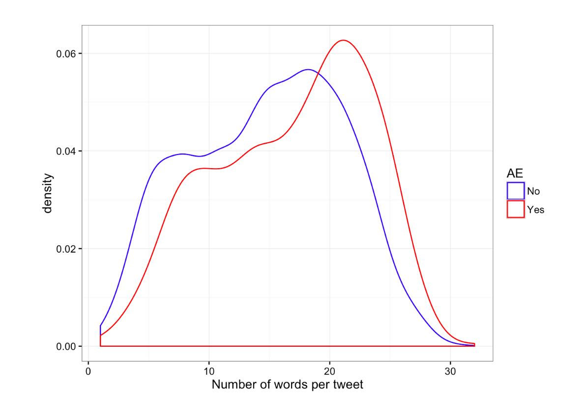

Exploratory Data Analysis
The first thing to note is that the dataset is imbalanced: only around 20% of all the tweets are related to adverse events.

To get a feel for the data, we look at the wordclouds. The wordcloud on the left is from tweets not related to AEs, the wordcloud on the right is from tweets corresponding to AEs. We see quite a few differences:
- “Pain” appears much bigger on the right
- Words related to major AEs like “sleep” and “addict” appear much bigger on the right
- Profanity plays a bigger role in AE tweets
Another interesting question concerns the sentiments in the tweets. The figure below compares the distribution of sentiments in non-AE tweets to sentiments found in AE tweets. Major differences are easy to spot:
- “Negative” sentiments occur more frequently for AE tweets
- “Trust” and “joy” are extremely low on AE tweets
Also, tweets related to adverse events tend to be longer:
